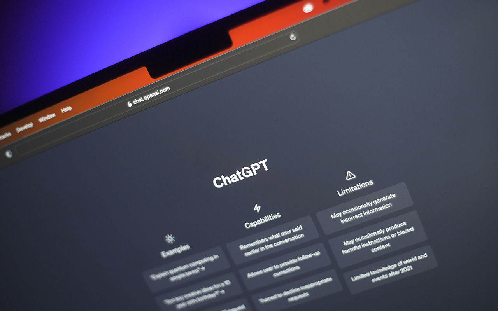

How Infostealers are Compromising Thousands of ChatGPT Accounts
Image Credits https://www.scmagazine.com/news/malware/infostealers-compromise-101134-chatgpt-accounts
John, a regular user of ChatGPT, received an email from the platform stating that his account may have been compromised. He had been accessing the website from public Wi-Fi hotspots for quite some time, so he immediately suspected that his information may have fallen into the wrong hands.
Unfortunately, John's suspicions became a reality when the investigation revealed that hackers had stolen his personal data. Upon further investigation, it was found that 101,134 ChatGPT accounts had been compromised.
This is just one of many incidents where thousands of users have fallen victim to infostealers and hackers. These cybercriminals have several tactics that they use to steal information from unsuspecting individuals.
How Infostealers are Compromising Accounts
Infostealers are programs designed to steal information from a computer or mobile device. When malware infects a device, it creates a backdoor to the system and steals personal data, such as usernames, passwords, and bank account details.
Using different forms of malware and social engineering tactics, infostealers can trick users into divulging their personal information. For example, they might distribute phishing emails that look like legitimate messages from trusted entities, like banks or organizations that users belong to.
Infostealers also use keylogging to steal sensitive information. Keylogging software is designed to capture keyboard inputs and record keystrokes, which can be used to steal login credentials and other important personal details.
Examples of Infostealer Attacks
Here are some examples of infostealer attacks that have affected organizations and individuals:
- In 2018, the infamous Magecart group used a skimming technique to steal payment card data from British Airways customers. The attack affected 380,000 customers.
- In 2019, Capital One bank was hacked, and it was revealed that 100 million customer accounts had been compromised. The hacker, Paige Thompson, had gained access to personal details like Social Security numbers, credit scores, and bank account numbers.
- In 2021, Microsoft reported that 44 million user accounts had been breached in an Infostealer attack. Data like email addresses and passwords were exposed in the attack.
How to Protect Yourself from Infostealers
Here are some tips on how to protect yourself from infostealer attacks:
- Use a strong password: Avoid using easy-to-guess passwords like birthdays and family names. Use a combination of lowercase and uppercase letters, numbers, and symbols. Also, use a different password for every account you have.
- Use two-factor authentication: Many services offer two-factor authentication, which adds an additional layer of security beyond a password. This can include a text message, call, or app notification.
- Keep software updated: Infostealers often take advantage of vulnerabilities in outdated software. Make sure your OS and applications are up-to-date.
- Be careful with emails and links: Be wary of emails or links that appear to be from unfamiliar or untrusted sources. Always check the sender and verify the website you are visiting before entering any information.
Conclusion
In conclusion, infostealer attacks are becoming increasingly common, and organizations and individuals need to take proactive measures to protect themselves. Using strong passwords, two-factor authentication, and staying vigilant when it comes to emails and links can go a long way in preventing attacks. Infostealers may continue to evolve, but keeping up with the latest security practices can help reduce the risk of becoming a victim.
Curated by Team Akash.Mittal.Blog
Share on Twitter Share on LinkedIn